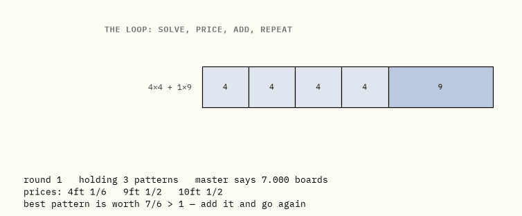
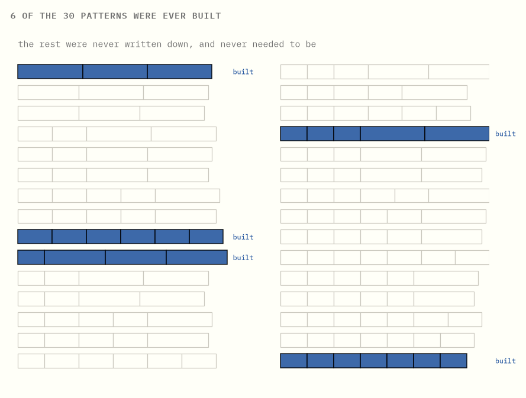
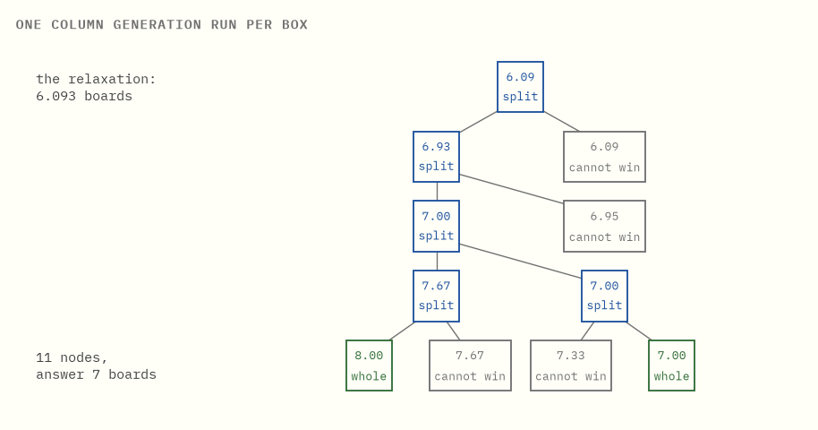

Solving a model you never wrote down
Column generation and branch-and-price, built from a cutting-stock order.
Here is a model with four trillion variables that fits on a napkin, and a way of solving it that never writes down more than a handful of them.
The duality guide gives you the check: prices that cover every option prove no plan beats your number. Run that backwards and it generates. An option the prices fail to cover is a missing variable, and you can solve for it directly instead of hunting for it.
The plan. Chapters 1 to 3 set up cutting stock and show that the obvious model is too weak while a second model is far stronger. Chapter 4 is why that second model cannot be written down. Chapters 5 to 9 are the loop that solves it anyway. Chapter 10 puts the loop inside a search tree, and confesses to two bugs that cost this repository real answers. Chapter 11 is what the same shape is called everywhere else.
Numbers below come from the code in this folder, in exact rationals, asserted by its tests.
0What this is

An order has to be cut from standard boards. How many boards does it take?
Model it the obvious way, relax it, and it proves you need at least 5.44 boards. So six might be enough. The model cannot say otherwise.
Now model the same order differently, relax it the same way, and it proves you need at least 6.5. Six is now impossible.
Seven boards can be cut. So seven is the answer, proved.
The second model has one variable for every way of cutting a board, which for a real order is a few trillion variables. This guide is about why that model is so much stronger, and how it gets solved without ever being written down.
In one sentence. Two models of the same order, both relaxed the same way, and only one of them can rule out six boards.
1The order
A workshop buys boards 25 feet long and needs shorter lengths cut from them.

| ordered | length | how many |
|---|---|---|
| short pieces | 4 ft | 3 |
| medium pieces | 9 ft | 6 |
| long pieces | 10 ft | 7 |
Boards are identical and there are plenty of them. Each is cut once, however you like, and the leftover at the end is waste, since two offcuts cannot be glued together. Use as few boards as possible.
A pattern is one way of cutting one board. For this order there are only six worth using, in the sense that no further piece could be squeezed into the leftover:

Six is a small enough number to print, which is exactly why this is the order to learn on. Chapter 4 is where that stops being true.
In one sentence. A pattern is one way of cutting one board, and the decision to be made is how many boards to cut with each.
2The obvious model, and why it is too weak
The natural way to model this is to decide, for each board, what comes off it: take a pile of boards, mark some of them "used", and assign pieces to them without overfilling any.
Relax that, letting a board be 30% used and a piece be split across two boards, and the answer it gives is:
total length ordered ÷ board length = (3×4 + 6×9 + 7×10) ÷ 25 = 136 ÷ 25 = 5.44 boards
Why that particular ratio? Because once a piece may be sawn anywhere and its two halves counted against two different boards, nothing can be stranded. A board with 6 feet spare no longer wastes them: the next piece simply starts there and finishes on the board after. Every constraint about fitting has dissolved, and the only thing the model still has to respect is material. The order asks for 136 feet of wood. Each board supplies 25 feet of it, none of which need go to waste. So fewer than 136 ÷ 25 boards cannot supply the wood, and 136 ÷ 25 boards can. The bound is the ratio because the relaxation removed every other obstacle.
It is a genuine lower bound and it is useless, for the reason just given: this is the answer you would get if boards were liquid, and the leftover at the end of one board carries over to the next. Round it up and six boards might do.
Six boards will not do. The relaxation cannot see it, because the fact that makes it impossible — a 10-foot piece sits on one board, whole — is precisely what was relaxed away.
In one sentence. Relaxing the obvious model throws away the very thing that makes the problem hard, so its bound is far too low.
3One variable per pattern
So model the decision differently. Instead of which pieces go on which board, decide how many boards to cut with each pattern.
Every pattern is a way of cutting a board that is already legal: the pieces fit, by construction. So the model has nothing left to say about fitting. It only has to say that enough pieces come out:
choose how many boards to cut with each pattern, to minimise the total number of boards, so that for each length, the pieces produced across all patterns cover the order.
Relax that, allowing a fractional number of boards cut with a pattern, and the answer is 6.5 boards.
Where does the half come from? Look back at the six patterns drawn in chapter 1 and take two of them. Cut six boards into a 4, a 9 and a 10, which uses 23 of the 25 feet available. Then cut half a board into a 4 and two 10s, the one pattern on that page that gets two 10-foot pieces out of a single board.
Count what comes out. Nine-foot pieces: one from each of the six boards, so six, and six were ordered. Ten-foot pieces: six from those boards, and a half board that would have given two gives one, so seven, and seven were ordered. Four-foot pieces: six and a half of them where three were ordered, so three and a half are surplus and go in the bin. Every order is met, and the boards used add up to 6 + 1/2.
Nothing does better, and you can see why without solving anything. Call a piece long if it is 9 feet or 10. Three long pieces never fit on one board, since the three shortest are 9 + 9 + 9 = 27 feet and a board is 25. So a board carries at most two of them however it is cut, which the six drawings bear out. Cutting half a board with a pattern yields half of each of its pieces, so that ceiling survives the relaxation: two long pieces per board of cutting, whole boards or not.
The order wants 6 nines and 7 tens. Thirteen long pieces at two to a board needs 13/2 boards, and 13/2 is 6.5. The mix above sits exactly on that ceiling, which is why it cannot be beaten.
Two relaxations of the same order, an enormous distance apart. Integrality was not discarded this time. It was absorbed into the variables: every pattern is a whole-board decision already made correctly, so relaxing the count of patterns cannot un-decide it. What remains to relax does far less harm.
| says you need at least | so, at least | true answer | |
|---|---|---|---|
| the obvious model, relaxed | 5.44 boards | 6 | 7 |
| one variable per pattern, relaxed | 6.5 boards | 7 | 7 |
Here the second relaxation settles the question by itself, which is the reason to put up with everything that follows.
(The standard name for this reformulation is Dantzig–Wolfe decomposition. Chapter 11 comes back to it; for now the idea is all you need.)
In one sentence. Deciding in whole patterns rather than in individual pieces absorbs the integrality, so relaxing what is left costs much less.
4Too many to write down
The catch arrives immediately. The strong model needs one variable per pattern, and patterns multiply.
A paper mill cutting a 5600mm roll into ten ordered widths has this many ways to cut one roll:

3,972,952,644,549 patterns. One variable each. You cannot write that model down, you cannot store it, and you certainly cannot hand it to a solver.
Almost all of those variables are worthless. A good answer uses a handful of patterns and leaves the rest at zero. The difficulty is not the count. It is that you cannot tell which handful matters until the thing is solved.
In one sentence. The strong model is unwritable, and almost all of it is irrelevant, but you cannot tell which part until you have solved it.
5Start with a few
The model cannot be written down. So do not write it down. Start with a model that is obviously too small.
Take a few patterns — say the lazy ones, each board cut into copies of a single length — and solve that. This is the restricted master: the real model, restricted to the columns someone has bothered to write down.
Our order has three lazy patterns: a board cut into six 4-foot pieces, a board cut into two 9s, a board cut into two 10s. With only those three on the table there is nothing to decide, because each ordered length has exactly one source. Here is the whole calculation, and it is arithmetic you can do in your head:
- Three 4-foot pieces, six to a board, is half a board of cutting.
- Six 9-foot pieces, two to a board, is three boards.
- Seven 10-foot pieces, two to a board, is three and a half.
Add them up: 7 boards, which answers a smaller question than the one we asked.
That number is an honest upper bound, since those three patterns really do fill the order. What it is not is the answer to the strong model, which has three more patterns nobody has written down, and in the mill instance four trillion.
So the method now needs one thing, and only one. Not a way to search the missing patterns — there are too many. A way to answer whether any of them would help without adding them, and ideally without looking at them.
That is what the next two chapters are, and the surprising part is that the too-small model already contains the answer.
In one sentence. Solving a deliberately impoverished model is free, and the only question left is whether anything is missing from it.
6What the prices are telling you
Solve the restricted master and it hands back more than a number. It hands back prices, one per ordered length.
A price answers one specific question. Suppose the customer rang up and asked for one more 9-foot piece: how much extra cutting would that cost, in boards? That number is the price of a 9-foot piece. The duality guide is where these come from and why one exists for every ordered length at once. At the first round they come out as
| length | price |
|---|---|
| 4 ft | 1/6 |
| 9 ft | 1/2 |
| 10 ft | 1/2 |
Each one is readable straight off the lazy pattern that supplies it. The only source of 4-foot pieces here is a board cut into six, so one more of them costs a sixth of a board. The only source of 9-foot pieces is a board cut into two, so one more costs half a board. The 10s the same, for the same reason.
Be clear about what these are. They are not the prices of the real problem. They are what this impoverished three-pattern model currently believes, and they will move as better patterns arrive.
Now the move the whole method rests on. Take any pattern, written down or not.
Cutting a board with it costs one board. The pieces that come off it are worth, at these prices, some amount. So the pattern is worth adding exactly when
the pieces it yields are worth more than one board.
Check it on the three patterns the model already holds. Six 4-foot pieces at 1/6 each: worth exactly 1. Two 9s at 1/2 each: exactly 1. Two 10s at 1/2: exactly 1. Three sums, all landing on 1, and none of them a help.
That is not a coincidence and it is worth seeing why: a pattern the model is already leaning on cannot be worth more than the board it eats, or the prices would not have come out of that model in the first place. Solving forced them to be consistent with everything on the table.
One board in, pieces worth some amount out. The difference between the two is what everyone else calls the pattern's reduced cost: below zero when the pieces beat the board, which is when the pattern is worth having, and zero for the three just checked.
What the name buys you is small compared with what the comparison buys you. It uses the prices and the pattern's own contents, and nothing else. No solve, no model, no list. Which means a pattern nobody has ever written down can still be judged by it — and that is the crack the rest of the method goes through.
In one sentence. A pattern is worth adding when its pieces are worth more than a board, a test that needs only the prices and the pattern itself.
7The same test, from the other side
There is a second way to say all of that, and it is worth carrying both, because each one makes a different thing obvious.
Duality puts a rule on what a price list is allowed to be. Prices are legal only when no board anywhere can be cut into pieces worth more than the board costs. A list that fails that test is promising value out of nowhere, and a price list that promises value out of nowhere can be used to argue for anything.
The rule has a name, dual feasibility, and the thing to notice is its shape: it is one condition per pattern. One for each way of cutting a board. All four trillion of them.
The prices from chapter 6 pass that test for every pattern in the restricted master. Solving that model is what forced them to. What is open is every pattern left out of it, because a price list has no way of knowing which patterns exist — it is a list of numbers, one per length, and nothing in it records what it has never been shown.
So there are two cases, and they are the two halves of the method.
If the prices pass for the unwritten patterns too, the list is legal for the full model. Then the duality guide's check applies exactly as written: a plan and a price list that agree end the search. The number the restricted master reported is the full model's number, proved without the full model ever being built.
If some unwritten pattern fails, the prices were only legal because that pattern was missing. Writing it down is precisely what will force them to move.
Which is why the two framings are one search. Hunting for a pattern worth more than a board, and hunting for a broken dual condition, are the same hunt seen from opposite sides — and the next chapter is how you run it without a list.
In one sentence. A price list cannot tell which patterns it has never been shown, so the whole method is the search for one that would embarrass it.
8Asking for a pattern is a knapsack
The question is whether some unwritten pattern yields more than one board's worth at these prices.
Do not search the list. Build the answer.
Fill one 25-foot board so as to maximise the total value of the pieces taken off it, at the current prices. That is a knapsack problem: small, fast, entirely standard. And its answer is the best pattern in existence at these prices, including every one nobody has written down.
At the prices above the knapsack returns four 4-foot pieces and one 9-foot piece, worth 4×(1/6) + 1×(1/2) = 7/6. More than one board, so that pattern is missing and it goes into the model.
Pricing is where the work happens, and note what it returns: the argmax over every column, or a proof that none is worth adding, rather than a shortlist to sift through afterwards. When the knapsack's best is worth 1 or less, nothing anywhere would help, and the restricted model is optimal for the full one.
Try it yourself → Set the three prices by hand and watch which pattern the knapsack builds.
In one sentence. Finding the missing column is a knapsack, and it returns the best pattern in existence or a proof that none would help.
9The loop, and why it is allowed to stop
Put the two halves together and they take turns.
Column generation
- Start with any set of patterns that can fill the order at all.
- Solve the restricted master. Read off the prices.
- Solve the knapsack at those prices.
- If its best pattern is worth more than one board, add it and go to 2.
- Otherwise stop: no pattern in existence would help, so the restricted answer is the full model's answer.

Watch the number come down: 7 boards, then 6.875, then 6.5. Then the knapsack returns a pattern worth exactly 1 and the loop stops. Three patterns added, and 6.5 boards is optimal for a model nobody wrote down.
Be exact about what step 5 claims. Not that no better answer exists: that no column exists which would improve this one. The knapsack searched every pattern implicitly rather than sampling some, so it is a proof.
On a slightly bigger order, 55-foot boards with four different lengths, there are thirty usable patterns, and the loop settles after touching six of them:

Twenty-four patterns were never written down and never needed to be. On the mill instance the same sentence holds with four trillion in place of twenty-four.
Try it yourself → Step the loop one round at a time and watch the prices move.
In one sentence. Alternating between a small model and a knapsack solves a model nobody wrote down, and the last round is the one that proves it.
10Branching, when the answer is 6.5 boards
Nobody cuts half a board. The relaxation says 6.5, and 6.5 is not a plan.
For this order rounding up happens to be right, and for cutting stock it nearly always is. The relaxation is famously tight; instances where rounding up is wrong are rare and awkward to construct. But "nearly always" is not a proof, and a rounded bound is a number rather than a set of cuts. To get something you can take to the saw, the fractions have to be branched away.
Hence branch-and-price: branch-and-bound in which the relaxation at every node is itself solved by generating columns.
At each node
- Impose the node's branching decisions on the master.
- Solve that relaxation by column generation: the full loop, at every node.
- Prune if it is infeasible, or if its bound cannot beat the best plan found.
- If the answer is whole, record it. Otherwise pick a fractional pattern count and split: one child uses it at most ⌊x⌋ times, the other at least ⌈x⌉.

Each box hides a complete solve-price-add cycle. The tree stays small because it starts from a bound that is already nearly right, which is chapter 3 being repaid. Branch-and-price is branch-and-bound with a far better relaxation and a way of holding that relaxation implicitly.
Two traps, both of which cost this repository real answers
This is where the theory bit back. Both failures produced entirely reasonable looking trees and entirely wrong numbers.
A branching row has a price too. Tell a node "use this pattern at most zero times" and that restriction acquires a dual value, which inflates that one pattern's reduced cost. The knapsack then keeps nominating a pattern the master already holds and has pinned at zero. Reading that as "no improving column exists" stops the loop early and leaves the node's bound too high; in a minimisation, a bound that is too high prunes the optimum.
A restricted master can be infeasible at a node that is perfectly feasible. The columns that would have met the demand simply have not been generated yet. Declaring the node infeasible throws away real solutions. The fix is to give the master emergency columns at a punitive price, so it always has an answer and can produce prices; they fall out on their own as real patterns arrive.
The first version of the solver in this folder had neither fix, and disagreed with brute force on 476 of 1230 test instances. It now agrees on all of them. Neither bug announced itself. The trees looked sensible and the answers looked plausible, and only running every small instance against an independent brute-force solver exposed them.
One more admission. Branching on a single pattern's count, as above, is a weak rule. Real implementations use Ryan–Foster branching, which splits on whether two pieces share a board and pushes the restriction down into the knapsack itself. This guide keeps the simpler rule for legibility and pays for it in tree size.
In one sentence. Branch-and-price is branch-and-bound whose relaxation is generated rather than written down, and the traps are all in the interaction between the two.
11Where this leads
The shape of what just happened is more general than cutting boards.
Dantzig–Wolfe decomposition is the name for what chapter 3 did. A problem with block structure is rewritten so its variables are whole feasible solutions of one block rather than the block's individual variables. Here the block is "one board" and its feasible solutions are the patterns. The new relaxation sits between the integer hull and the naive relaxation, which is the general reason it is tighter and why anyone tolerates the extra machinery.
Column generation is how you optimise over those solutions without listing them. The pricing problem generates them on demand, producing precisely the extreme points of the block that the current prices ask for.
Benders decomposition points the same idea the other way. It generates rows rather than columns: fix the hard decisions, solve what is left, and take the dual of that leftover problem as a new constraint to send back. Every Benders cut is a price list doing exactly the job it did in chapter 7, proving a proposal cannot be as good as it claims.
When pricing is just filtering a list
A case that resembles the above and is not.
Suppose the columns are not defined by a polyhedron but pre-generated: a fixed list of candidate driver schedules, say, computed in advance. Then there is no optimisation problem to solve for the best column. You scan the list and take the best reduced cost. The algorithm still works and the surrounding branch-and-price machinery is unchanged.
But it is no longer generating the extreme points of a block. It is reduced-cost filtering of a discretised approximation of one, and the bound you get is a bound for that approximation. If a schedule you needed is absent from the list, nothing in the method will ever say so. Whatever produced the list made a modelling decision on your behalf.
What the plain words are really called
| this guide says | everyone else says |
|---|---|
| a pattern | a column |
| the model with one variable per pattern | the Dantzig–Wolfe reformulation / master problem |
| the model with the patterns you bothered to write down | the restricted master problem |
| a price for each ordered length | a dual variable |
| worth more than one board | negative reduced cost |
| asking for a pattern | the pricing problem / subproblem |
| the loop | column generation |
| the loop inside a search tree | branch-and-price |
| the obvious model, relaxed | the natural LP relaxation |
| generating rows instead of columns | Benders decomposition |
Further reading
The cutting-stock treatment here follows the spirit of chapters 2.2 and 8 of Integer Programming by Conforti, Cornuéjols and Zambelli, which is the place to go next and does properly what this page does with pictures.
Running the code
make venv # once, from the repository root
make test # re-check every number this page quotes
make figures # re-render every image
The solver reuses the exact-fraction simplex from the duality topic rather than carrying a second copy. This topic really is that one under load. The tests check the mathematics, the prose against the code, and branch-and-price against a brute-force solver that enumerates every pattern.